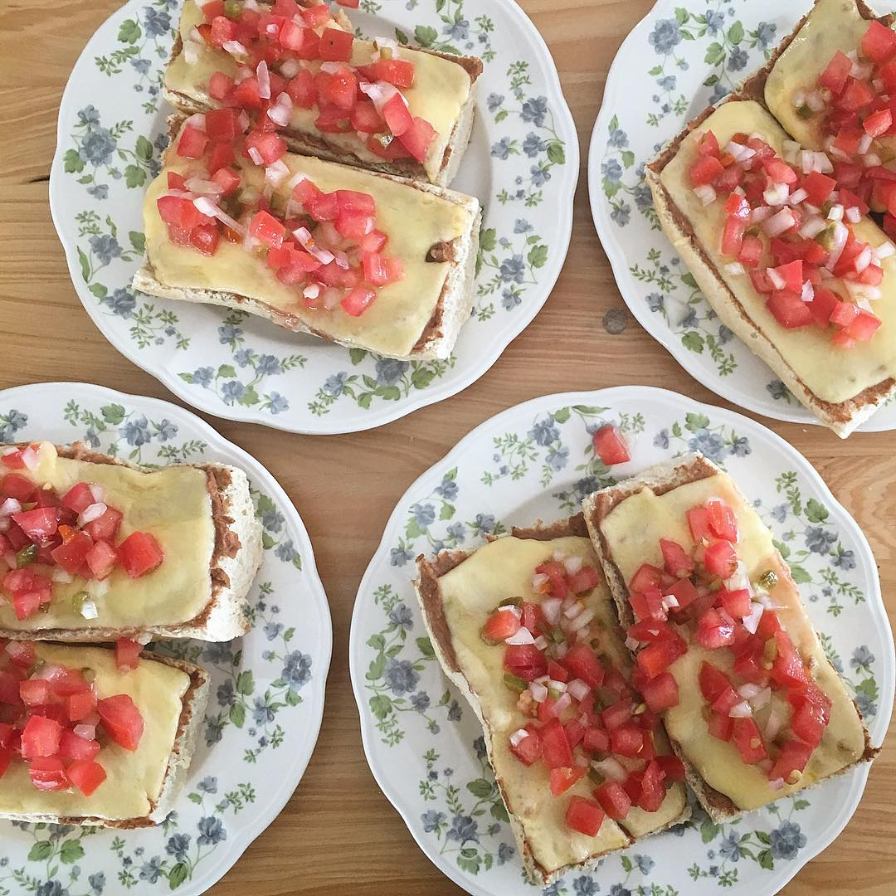
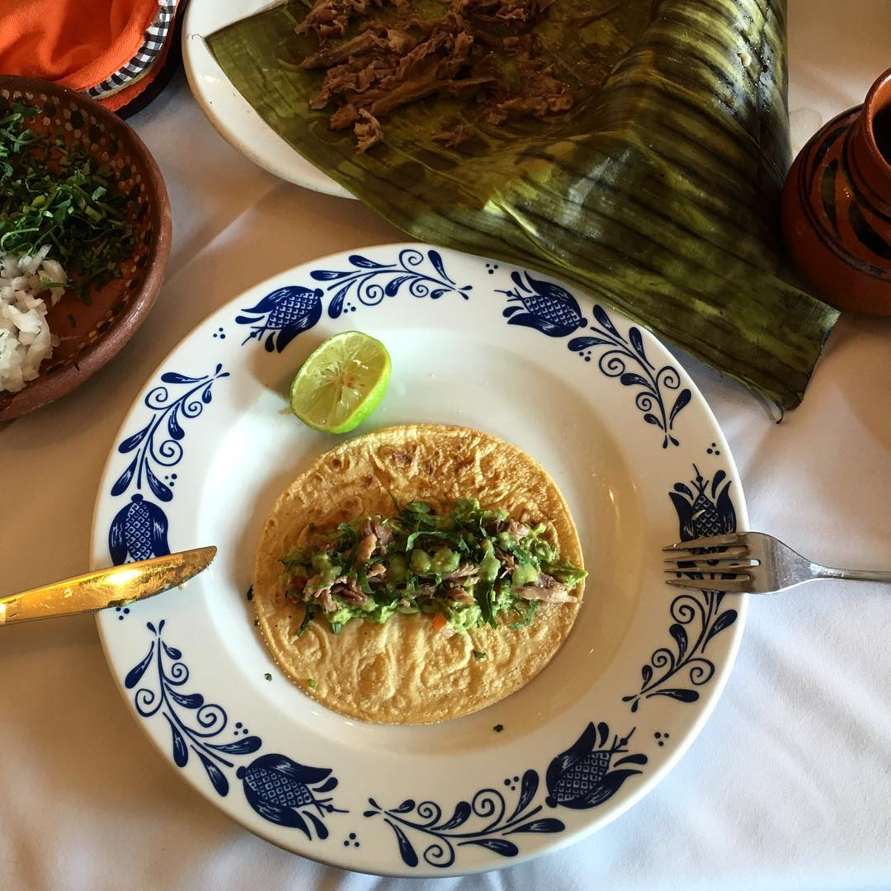

La comida mexicana es una de las más variadas que conozco. Su diversidad de sabores, colores, aromas y texturas atraen comensales de todo el mundo a probar lo que ofrece un país lleno de cultura.
En esta ocasión quiero hablar sobre platos que suelen servirse como desayuno en las mesas mexicanas. Uno de mis platos favoritos son los molletes, una preparación a base de pan -usualmente se usan bolillos tostados-, frijol refrito, queso y pico de gallo. Es un desayuno típico en los hogares de México aunque también se encuentra en muchos restaurantes.
La barbacoa puede ser mi plato favorito de México. En principio el término hace referencia a una forma de preparar carnes en su propio jugo o al vapor, y aunque esta es una técnica precolombina conocida en muchos países, hace parte de la cocina tradicional del centro de México.
La preparación de la barbacoa consiste en la cocción de la carne, que puede ser de res, oveja o cabra, dentro de un pozo de entre uno y dos metros de profundidad que se cava en el suelo. En la base del pozo se colocan piedras calientes y la carne se cocina envuelta en pencas de maguey, que sirven para aislarla del calor directo y que aportan su característico sabor.
Los acompañamientos de la barbacoa suelen ser el consomé de los jugos que salen de la cocción, café de olla y por supuesto unas ricas tortillas y salsas para armar tacos.
Aunque no es una preparación simple como para intentar en casa es un plato exquisito que recomiendo probar un domingo en la mañana.